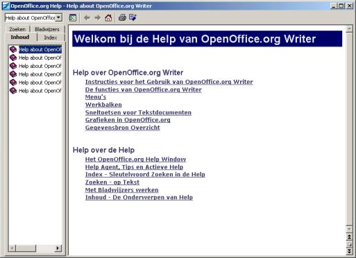

<!-- auteur: Simon Brouwer -->
<table  width="100%"  border="1" bordercolor="#B0C4ff" cellpadding="3" cellspacing="0">
<tr>
<td>

<table border="0">

<tr>

<td width="84%" valign="top">

<H2>Vertaling van de online helpbestanden</H2>

<p>Dit project is erop gericht om de Engelstalige online help te vertalen in het Nederlands.</p>
<p><i>Het project is al lang geleden afgerond. Deze pagina bestaat slechts voor referentie. Het doorlopende project waarin de gebruikersinterface en de online help 
van nieuwe versies van OpenOffice.org worden bijgewerkt heeft een <a href="t9n_nl2.html">eigen pagina</a></i></p>

<div align="center">
<p><br><i>Zo komt het er ongeveer uit te zien.</i></p>
</div>

<h3>Achtergrond</h3>
<p> Nu er steeds meer Nederlandstalige gebruikers, waaronder bedrijven en instellingen, belangstelling krijgen voor OpenOffice.org, wordt het in toenemende mate als probleem gezien dat de Online Helpfunctie niet in het Nederlands is vertaald. Zelfs voor diegenen die weinig moeite hebben met Engels, blijft uitleg in de eigen taal een stuk toegankelijker.
Wij denken daarom dat de beschikbaarheid van een Nederlandstalige helpfunctie de populariteit van OpenOffice.org in ons taalgebied enorm zal bevorderen. </p>
<p>Hoewel een team van Sun Nederland de vertaling van het gebruikersinterface voor Star Office 6.0 NL helemaal heeft nagelopen, en het resultaat tevens beschikbaar is gesteld voor OpenOffice.org, is ook in deze Star Office de helpfunctie in het Engels gelaten. Er zijn ook geen concrete plannen voor de vertaling ervan.  
Om deze reden hebben we dit project binnen nl.openoffice.org gestart.</p>
<p>
De online helpbestanden van OpenOffice.org/Star Office zijn beschikbaar in XML-bestandsformaat, wat het in principe mogelijk maakt om ze te vertalen met algemeen beschikbare software. Omdat de te vertalen tekst echter ingebed is in ingewikkelde XML-codes, valt dat in de praktijk niet mee. Gelukkig hebben we met behulp van speciale <a href="t9n.zip">softwaretools</a> de XML bestanden kunnen omzetten in een formaat waarmee het vertalen relatief eenvoudig is te doen. Het werk is ook heel makkelijk te verdelen, en we willen iedereen dan ook van harte uitnodigen om een handje te helpen!</p>

<h3>Hoe gaat het vertalen in de praktijk?</h3>

<p>Om te beginnen heb je het bestand t9n-nl*.zip nodig. De meest recente versie van dit bestand kun je downloaden vanaf de <a href="http://www.openoffice.org/issues/show_bug.cgi?id=8924">issue 8924</a> waar de bijdragen aan de vertaling verzameld worden. </p>
<p> Na uitpakken kun je het bestand openen in een gangbare teksteditor, zoals Notepad van Windows XP (hij moet wel zo'n groot bestand kunnen inladen).</p>
<p>Je kunt dan zien dat het bestand is opgedeeld in een groot aantal secties, die overeenkomen met de oorspronkelijke XML bestanden. Deze secties beginnen steeds met ####. Een voorbeeld van zo'n sectie (ingekort) staat hieronder: </p><i>
<p>
####Text\SWRITER\01\04120210.xml<br>
translated (by/date): (not translated yet)<br>
reviewed (by/date)  : (not reviewed yet)<br>
<br>
-------------------------------<br>
<br>
****6;15;11(subject)Index/Table<br>
Index/Tabel<br>
<br>
-------------------------------<br>
<br>
****54;58;11(help:link)Index/Table<br>
Index/Tabel<br>
<br>
****55;39;7(text:p)If you <br>
Als u <br>
<br>
****55;68;32(help:link)create a table of contents/index<br>
cre&euml;er een tabel van contents/index<br>
<br>
****55;112;166(), first define the type here. There are several types to choose from. <br>
, eerst(e) definieer het type hier. Er zijn verscheidene types naar kies van. <br>
</p></i>

<p>Wanneer je zo'n sectie gaat vertalen, moet je <i>(not translated yet)</i> vervangen door je eigen naam en de datum van de vertaling.Verder zie je steeds twee regels waarvan de eerste met **** begint. De bovenste moet je steeds laten zoals hij was, de onderste regel moet je (zonodig) bewerken. </p>
<p>Op die onderste regels is al een grove vertaling toegepast, door het automatisch vervangen van veel voorkomende woorden en -combinaties door het Nederlandstalige equivalent. Hoewel dit aardig wat typewerk scheelt, kun je wel zien dat dit meestal kromme zinnen oplevert, en het komt vaak voor dat termen incorrect zijn vertaald. De uitdaging is dus om een goedlopende, kloppende vertaling te maken van de Engelstalige versie die erboven staat. Hierbij zul je ook vaak in de OpenOffice.org software moeten controleren of de namen van bijv. menu's, en de beschrijving in het algemeen, kloppen. </p>
 
<p>Voordat je secties uitkiest om te vertalen, controleer de status ervan op de <a href="http://www.r2g.nl/~remco/statuslijst.htm">statuslijst</a>. Meld je bovendien aan op de mailinglist voor dit project: <a href="http://nl.openoffice.org/servlets/ProjectMailingListList"> localization@nl.openoffice.org</a> en laat er weten welke secties je wilt vertalen. Zo voorkomen we dubbel werk.</p> <p>De statuslijst kan aangeven dat de sectie al vertaald is, of dat iemand al heeft aangekondigd om een reeks bestanden te willen vertalen. Als dat laatste het geval is, wil dat overigens niet zeggen dat die persoon er binnen korte tijd al aan  toe zal komen, en kun je natuurlijk evengoed even overleggen via genoemde mailinglist. </p>

<p>Wanneer je secties gaat vertalen, kun je die het best eerst naar een eigen bestand kopi&euml;ren. Wanneer je daarmee klaar bent, kun je het bestand met de door jou vertaalde secties uploaden op <a href="http://nl.openoffice.org/project/www/issues/show_bug.cgi?id=8924">issue 8924</a>. We proberen regelmatig de eigenlijke helpfiles te compileren uit de bijgedragen vertalingen. Het resultaat daarvan kun je downloaden, uitpakken en eenvoudigweg in de installatiedirectory van OpenOffice.org kopi&euml;ren, zodat je de help files met jouw vertaling erin kunt bekijken. Dit wordt in de mailinglist aangekondigd. </p>

<h3>Meer informatie</h3>
<p>Bij de <a href="t9n.zip">softwaretools</a> zit documentatie waarin een aantal zaken uitvoeriger wordt beschreven dan op de beperkte ruimte van deze webpagina mogelijk is. </p>
<p>Als er nog iets niet duidelijk is, vraag het dan via de mailinglist!</p>

<!-- <h3>Nog even samengevat:</h3>


<p>Hulp bij dit project is zeer welkom! Vele handen maken licht werk, en hoe meer vrijwilligers, hoe sneller een bruikbare versie van de vertaalde help beschikbaar kan komen. Als je wilt meehelpen, laat dit dan weten in de 
<a href="http://nl.openoffice.org/servlets/ProjectMailingListList">localization@nl.openoffice.org mailinglist</a>
</p>

<p>De coördinatie van dit project is in handen van Remco R. Gerbrands. Communicatie graag via de mailinglist.</p>
 -->

<p>&nbsp;</p>

</td>

<!-- navbar -->

<td width="15%" valign="top">

<table width="100%" border="0" cellspacing="0" cellpadding="5">

<tr><td background="header.gif"><font color="#000000" face="Verdana, Arial, Helvetica, sans-serif" size="2"><b>
nl.OOo
</b></font></td></tr>

<tr><td background="line.gif"><font size="2">
<a href="index.html">Intro</a><br>
<a href="nl-nieuws.html">Nieuws</a>
</font></td></tr>

<tr><td background="header.gif"><font color="#000000" face="Verdana, Arial, Helvetica, sans-serif" size="2"><b>
Software
</b></font></td></tr>

<tr><td background="line.gif"><font size="2">
 <a href="about-product.html">Beschrijving</a><br>
 <a href="nieuw-in-2.html">Nieuw in 2.0</a><br>
 <a href="downloaden.html">Downloaden</a><br>
 <a href="cdrom.html">CD-ROM</a><br>
</font></td></tr>

<tr><td background="header.gif"><font color="#000000" face="Verdana, Arial, Helvetica, sans-serif" size="2"><b>
OOo
</b></font></td></tr>

<tr><td background="line.gif"><font size="2">
 <a href="achtergronden.html">Achtergronden</a><br> 
 <a href="faq.html">FAQ</a><br>
 <a href="begrippenlijst.html">Begrippenlijst</a>
</font></td></tr>

<tr><td background="header.gif"><font color="#000000" face="Verdana, Arial, Helvetica, sans-serif" size="2"><b>
Hulp
</b></font></td></tr>

<tr><td background="line.gif"><font size="2">
 <a href="about-mailinglist.html">Mailinglists</a><br> 
 <a href="about-documentation.html">Documentatie</a><br> 
 <a href="tipsentrucs.html">Tips&amp;trucs</a> 
</font></td></tr>

<tr><td background="header.gif"><font color="#000000" face="Verdana, Arial, Helvetica, sans-serif" size="2"><b>
Meehelpen
</b></font></td></tr>

<tr><td background="line.gif"><font size="2">
 <a href="about-helping.html">Projecten</a><br> 
 <a href="about-issuezilla.html">Bugs&nbsp;melden</a><br>
</font></td></tr>

<tr><td background="header.gif"><font color="#000000" face="Verdana, Arial, Helvetica, sans-serif" size="2"><b>
Contact
</b></font></td></tr>

<tr><td background="line.gif"><font size="2">
 <a href="about-mailinglist.html">Mailinglists</a><br>
 <a href="credits.html">Wie zijn wij?</a><br>
</font></td></tr>

<tr><td background="header.gif"><font color="#000000" face="Verdana, Arial, Helvetica, sans-serif" size="2"><b>
Overig
</b></font></td></tr>

<tr><td background="line.gif"><font size="2">
 <a href="links.html">Links</a><br>
 <a href="about-legal.html">Licenties</a><br>
</font></td></tr>

<tr><td background="header.gif"><font color="#000000" face="Verdana, Arial, Helvetica, sans-serif" size="2"><b>
&nbsp;
</b></td></tr>

</table>

</td>

<!-- end navbar -->

</tr>
</table>

</td>
</tr>
</table>
</table>
